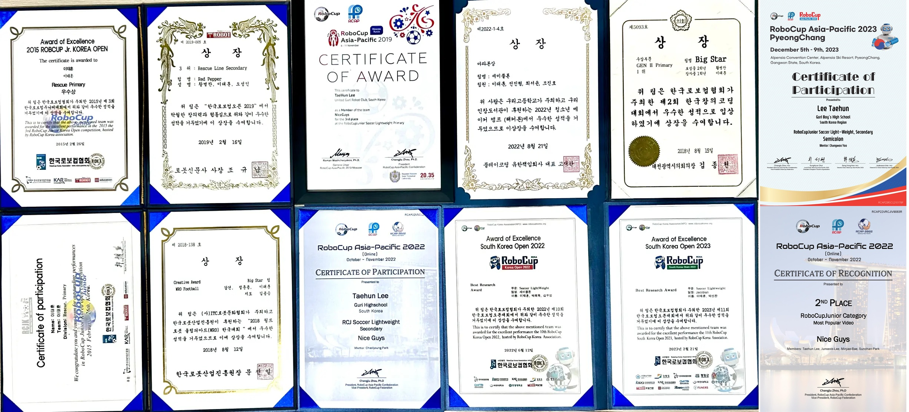
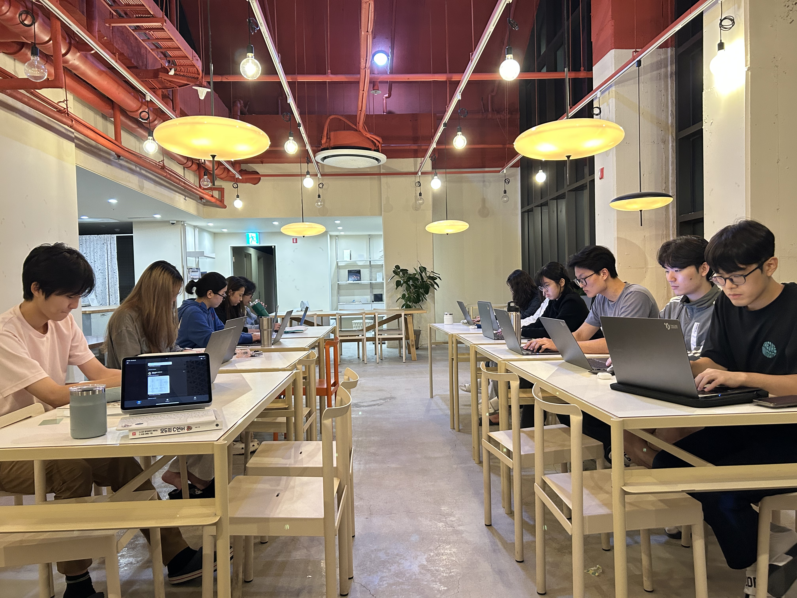
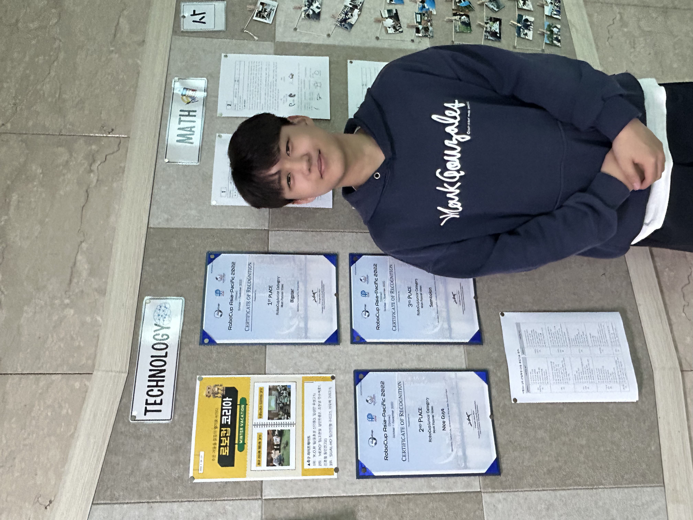

PUBLICATIONS
[1] T. Lee, Sensor-Based Feedback Control in Omnidirectional Systems: Applications in RoboCup Junior Soccer, National High School Journal of Science (NHSJS), 2025. [Online].
Research focused on inverse kinematics, ultrasonic feedback, compass sensor feedback control, and autonomous robotic navigation in RoboCup environments.
READ PAPER[2] T.Lee et al, RoboUnited SSL Team Description Paper 2026, RoboCup SSL, 2026. [Online].
Team description paper for RoboCup Small Size League, introducing robot architecture, embedded systems, omnidirectional drive platforms, UDP-based wireless communication, an On-Board Camera System, and team AI written in Python.
READ PAPERAWARDS & ACHIEVEMENTS

Major Awards and Achievements
• 2015 RoboCup South Korea Open
– 4th Place, RoboCup Junior Rescue Line Primary Division
• 2018 RoboCup South Korea Open
– 3rd Place, RoboCup Junior Rescue Line Secondary Division
• 2018 RoboCup Australia Open, Adelaide
– 4th Place, RoboCup Junior Soccer Division
• 2018 World Robot Olympiad South Korea Open
– Creative Award, Soccer Division
• 2018 Creative Coding Competition
– 1st Place (Daejeon City Council Chairman Award)
• 2019 RoboCup Asia-Pacific Championship, Moscow, Russia
– 3rd Place, RoboCup Junior Soccer Division
• 2022 RoboCup South Korea Open
– Best Research Award, Soccer Division
• 2022 RoboCup Asia-Pacific Championship, Singapore
– Mentored teams achieving 1st, 2nd, and 3rd Place
• 2023 RoboCup South Korea Open
– Mentored team achieving Best Research Award, 3rd place, Soccer Division
• 2023 RoboCup Asia-Pacific Championship, PyeongChang, South Korea
– Mentored team achieving Best Research Award, Soccer Division
• 2025 RoboCup South Korea Open (Coach)
– Mentored team achieving Best Research Award, Soccer Division
• 2026 RoboCup South Korea Open (Coach)
– Mentored team achieving Rank 5, Soccer Vision Division
EXPERIENCES
2014 World Robot Olympiad Korea
Early robotics competition experience focused on problem-solving, embedded systems, and autonomous robot programming.
2015 RoboCup South Korea, Australia Open – Rescue Line Primary Division
Participated in an international rescue robotics competition as a South Korean representative, focused on autonomous line tracing, obstacle avoidance, and sensor integration. This experience marked an early stage in long-term robotics development.
2016 RoboCup Junior South Korea Open – Rescue Line Division
Continued development of autonomous rescue robots with improvements in line detection stability and embedded control systems. Implemented double-geared obstacle holder.
2017 RoboCup Junior South Korea Open – OnStage Division
Participated in the RoboCup Junior OnStage division involving creative robotics performance, synchronized motion control, and human-robot interaction concepts.
2018 Creative Coding Challenge, World Robot Olympiad Korea, RoboCup Junior Australia Open
Expanded robotics competition experience through international RoboCup participation and WRO activities. Focused on IR signal-based autonomous navigation, competition strategy, and Omni Mobile Robot hardware optimization.
2019 RoboCup Junior – South Korea Open, Japan Open, Asia Pacific, Moscow, Russia
Transferred into Arduino-based omnidirectional autonomous soccer robots with infrared ball tracking, dribbler systems, and an Ultrasonic sensor & Pixy camera-based feedback control system. Participated in the South Korea Open, Japan Open, and Asia-Pacific Championship in Moscow.
2022 RoboCup South Korea Open
Participated in RoboCup Soccer Lightweight League after the pandemic. Organized the school robotics club and volunteered as a lecturer. Implemented an active dribbling system, which was the only and most innovative mechanism at the competition. Introduced obstacle avoidance with an active dribbler to the Korean robot soccer community.
2022 RoboCup Asia-Pacific Championship – Online, Singapore
Participated in both Rescue Line Secondary and Soccer Lightweight divisions. Applied ultrasonic feedback control, infrared sensing, and omnidirectional motion systems in international competitions.
2023 RoboCup South Korea Open & Asia-Pacific Championship – Pyeongchang, South Korea
Improved autonomous soccer systems through sensor fusion, feedback stabilization, and real-time motion optimization for international RoboCup competitions.Implemented the ultrasonic sensor value-based feedback control system and active dribbling device. Volunteered at a school robotics club, leading teams that got 3rd place and Best Research Awards.
RoboCup Korea Open 2025, RoboCup Korea Open 2026, and RoboCup Championship 2026
Developed RoboCup Small Size League platforms and vision-based autonomous soccer systems. Current research focuses on embedded systems, ESP32-C5 integration, multi-agent coordination, and real-time vision processing. Participated in RoboCup 2025 and 2026 Soccer division as a coach, led students to get the Best Research Award
CPUnited – Taejae University 3rd Cohort Coding Club
Organized C Language and Python classes at Taejae University student residence to inspire students to join my RoboCup SSL robotics project. After the 2 months of classes, some members actively showed interest in the project and joined as new members.


Personal Robotics Feedback Control Projects since 2018
Experimental robotics projects involving pressure sensor feedback, button-based interaction systems, and IMU-based stabilization control. Focused on real-time embedded control and sensor-driven robotic response systems.
2-Axis Gimbal Stabilization Project
Embedded gimbal stabilization project using IMU feedback control and servo-based angle correction for real-time balancing experiments.
3D Printer Development Project
Experimental 3D printer development involving mechanical assembly, motion calibration, and embedded motor control systems. Successfully printed 80*50*10 cube in a minute.
Unable to Connect to the Internet Project for Younger brother
Imitated Google's Dino game for 6 years old younger brother.
Can Satellite Project
Aerospace-oriented embedded systems project involving compact satellite platforms, sensor telemetry, and environmental data acquisition.
CONTACT

Robotics lover focused on autonomous systems, omnidirectional robots, sensor-based feedback control, and RoboCup SSL.
로봇과 자율주행 시스템 개발에 관심을 가지고 다양한 프로젝트와 연구를 수행해 오고 있습니다. RoboCup Junior 및 RoboCup Asia-Pacific Championship에 참가하며 전방향 구동 로봇, 센서 기반 피드백 제어, 드리블러 및 하드웨어 시스템 등을 직접 개발해왔으며, 2025년부터 태재대학교, 강원대학교, 동국대학교, University of Utah 재학생으로 구성된 대한민국 최로 RoboCup SSL(Small Size League) 대학부 팀을 꾸려 전방향 구동 로봇 연구를 진행하고 있습니다. 또한 옴니휠 기반 로봇의 역기구학과 초음파·적외선·IMU 센서를 활용한 제어 시스템 연구 논문을 작성하여 National High School Journal of Science에 투고, Peer Review를 거쳐 게재를 완료하였습니다.
현재 Taejae University에서 프로젝트 기반 학습(Project-Based Learning)과 글로벌 로테이션(Global Rotation) 교육 시스템을 바탕으로 비판적 사고, 리더십, 창의적 사고 등을 배우며 수업 외의 시간을 적극 활용해 로봇공학 융합기술을 학습하고 있습니다. 특히 여러 국가의 산업·기술·문화 환경을 직접 경험하며 국제 협업 역량과 문제 해결 능력을 확장하는 과정에 큰 의미를 두고 있습니다.
2026년 하반기부터는 글로벌 로테이션 프로그램의 일환으로 San Francisco State University, New York School of Design, Shenzhen University, Peking University, Kanda University of International Studies 및 러시아 현지에서 머무르며 기술, 디자인, 국제 커뮤니케이션, 문화적 관점이 융합된 학습과 연구를 진행할 예정입니다. 이를 통해 로봇 기술뿐 아니라 글로벌 환경에서의 협업 능력과 융합적 사고를 더욱 발전시키고자 합니다.
기술적으로는 임베디드 시스템, ESP32 및 Arduino 기반 제어, 전방향 이동 로봇, 컴퓨터 비전, 센서 피드백 제어 분야에 관심이 있으며, 장기적으로는 휴머노이드 로봇과 RoboCup SSL 시스템 개발 연구를 목표로 하고 있습니다.
I am passionate about robotics and autonomous systems development, and have participated in a variety of research and engineering projects. Through competitions such as RoboCup Junior and the RoboCup Asia-Pacific Championship, I have designed and developed omnidirectional robots, sensor-based feedback control systems, dribblers, and embedded hardware systems. Currently, I am working on RoboCup SSL (Small Size League) robotics projects and autonomous robotic systems research. In addition, I completed and revised a research paper on inverse kinematics and sensor-based feedback control for omniwheel robots using ultrasonic, infrared, and IMU sensors, which was submitted to the National High School Journal of Science.
I am currently studying at Taejae University, where I am personally pursuing robotics and interdisciplinary technology education with the university's project-based learning and the Global Rotation program. I especially value opportunities to experience different industrial, technological, and cultural environments firsthand while developing international collaboration and problem-solving skills.
Beginning in the second half of 2026, as part of the Global Rotation program, I will study and stay at San Francisco State University, New York School of Design, Shenzhen University, Peking University, Kanda University of International Studies, and in Russia. Through these experiences, I aim to broaden my understanding of technology, design, international communication, and cross-cultural collaboration while strengthening a multidisciplinary perspective on robotics and innovation.
My technical interests include embedded systems, ESP32 and Arduino-based control systems, omnidirectional robotics, computer vision, and sensor feedback control. In the long term, I hope to contribute to the development of humanoid robotics and advanced RoboCup SSL systems.
Location: Seoul, South Korea
Email: robounitedssl@gmail.com
GitHub: github.com/DevTaehunLee
LinkedIn: View LinkedIn Profile
Instagram: @ngs.r_obotics_
Resume / CV: Download CV
Google Scholar: View Publications